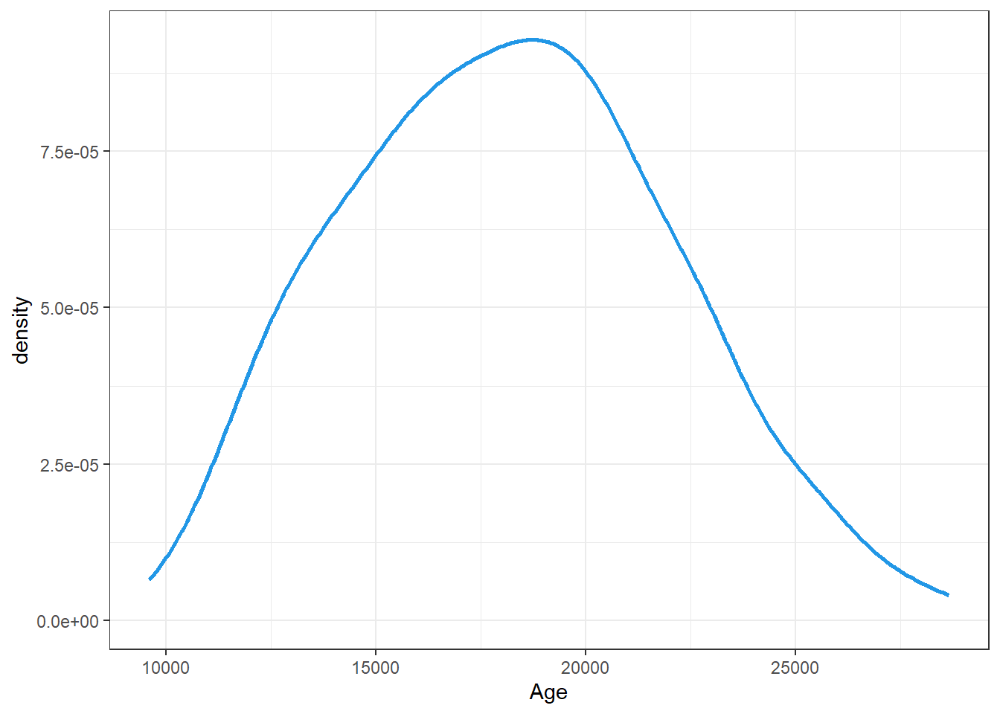
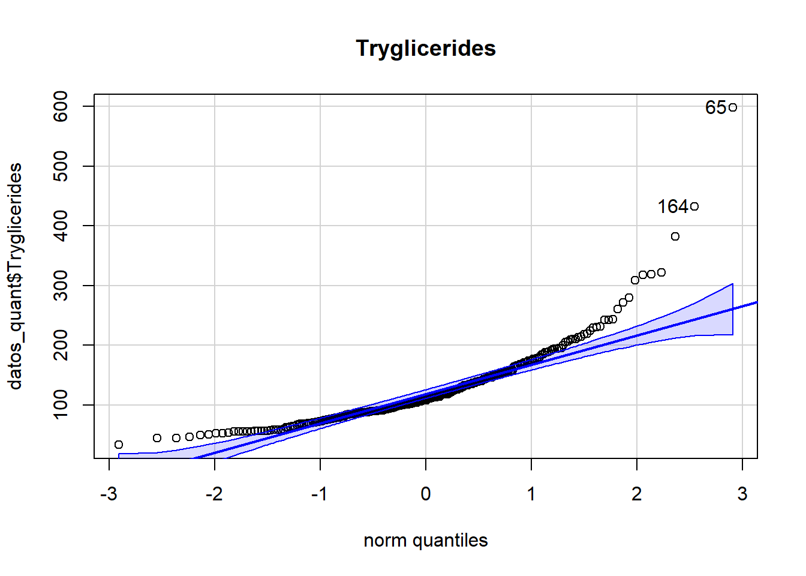

library(tidyverse)
library(dplyr)
library(GGally)
library(psych)
library(skimr)
library(fmsb)
library(mvnormtest)
library(car)
library(nortest)
library(fBasics)Normalidad Multivariante
Presentación del problema
Vamos a tratar una base de datos relacionados con la cirrosis. La cirrosis es una etapa tardía de la cicatrización (fibrosis) del hígado causada por muchas formas de enfermedades y afecciones hepáticas, como la hepatitis y el alcoholismo crónico.
En este dataset tenemos 418 observaciones (pacientes) con 20 varibales:
Nuestro objetivo para este estudio sería:
- Comprobar si en nuestros datos hay normalidad multivariante.
Los datos provienen de la página web Kaggle: Kaggle - Cirrhosis.
El dataset consta de 418 muestras, donde cada una representa una serie de características de un paciente. A cada paciente se le atribuyen 26 valores, uno de ellos es su ID, y el resto son variables relacionadas con la salud cardíaca, tanto geográficas como de hábitos personales.
Antes de explicar cada variable, modifiquemos la tabla de datos para tenerla limpia en formato tidy.
Cargamos la librerías que utilizaremos
Convertir los datos en tidy
Cargamos la tabla de datos y la convertimos a tibble para facilitarnos la manipulación.
datos = read.csv("cirrhosis.csv", header = T)
datos = datos %>% as.tibble
str(datos)tibble [418 × 20] (S3: tbl_df/tbl/data.frame)
$ ID : int [1:418] 1 2 3 4 5 6 7 8 9 10 ...
$ N_Days : int [1:418] 400 4500 1012 1925 1504 2503 1832 2466 2400 51 ...
$ Status : chr [1:418] "D" "C" "D" "D" ...
$ Drug : chr [1:418] "D-penicillamine" "D-penicillamine" "D-penicillamine" "D-penicillamine" ...
$ Age : int [1:418] 21464 20617 25594 19994 13918 24201 20284 19379 15526 25772 ...
$ Sex : chr [1:418] "F" "F" "M" "F" ...
$ Ascites : chr [1:418] "Y" "N" "N" "N" ...
$ Hepatomegaly : chr [1:418] "Y" "Y" "N" "Y" ...
$ Spiders : chr [1:418] "Y" "Y" "N" "Y" ...
$ Edema : chr [1:418] "Y" "N" "S" "S" ...
$ Bilirubin : num [1:418] 14.5 1.1 1.4 1.8 3.4 0.8 1 0.3 3.2 12.6 ...
$ Cholesterol : int [1:418] 261 302 176 244 279 248 322 280 562 200 ...
$ Albumin : num [1:418] 2.6 4.14 3.48 2.54 3.53 3.98 4.09 4 3.08 2.74 ...
$ Copper : int [1:418] 156 54 210 64 143 50 52 52 79 140 ...
$ Alk_Phos : num [1:418] 1718 7395 516 6122 671 ...
$ SGOT : num [1:418] 137.9 113.5 96.1 60.6 113.2 ...
$ Tryglicerides: int [1:418] 172 88 55 92 72 63 213 189 88 143 ...
$ Platelets : int [1:418] 190 221 151 183 136 NA 204 373 251 302 ...
$ Prothrombin : num [1:418] 12.2 10.6 12 10.3 10.9 11 9.7 11 11 11.5 ...
$ Stage : int [1:418] 4 3 4 4 3 3 3 3 2 4 ...Vamos a modificar el data set para que sea más cómodo a la hora de trabajar con él.
Transformamos las variables qualitativas en factor y, en las de Si o No (Y: Si, N: No) cambiamos los valores para que sea más ilustrativa y entendible. De la misma forma con el sexo cromosómico (F: Female, M: Male)
datos = datos %>%
mutate(Status = factor(Status, levels = c("C", "CL", "D"), labels = c("Cens",
"Cens_Trat", "Muerto")))
datos = datos %>%
mutate(Drug = Drug %>% as.factor)
datos = datos %>%
mutate(Sex = if_else(Sex == "F", "Female", "Male") %>% as.factor)
datos = datos %>%
mutate(Ascites = if_else(Ascites == "Y", "Si", "No") %>% as.factor)
datos = datos %>%
mutate(Hepatomegaly = if_else(Hepatomegaly == "Y", "Si", "No") %>% as.factor)
datos = datos %>%
mutate(Spiders = if_else(Spiders == "Y", "Si", "No") %>% as.factor)
datos = datos %>%
mutate(Edema = factor(Edema, levels = c("Y", "N", "S"), labels = c("Si", "No",
"Sin")))
datos = datos %>%
mutate(Stage = Stage %>% as.factor)Observemos que hay muestras que tienen valores desconocidos (NA). Veamos cuales son:
# A tibble: 142 × 20
ID N_Days Status Drug Age Sex Ascites Hepatomegaly Spiders Edema
<int> <int> <fct> <fct> <int> <fct> <fct> <fct> <fct> <fct>
1 6 2503 Muerto Placebo 24201 Fema… No Si No No
2 14 1217 Muerto Placebo 20535 Male Si Si No Si
3 40 4467 Cens D-penicil… 17046 Fema… No No No No
4 41 1350 Muerto D-penicil… 12285 Fema… No Si No No
5 42 4453 Cens Placebo 12307 Fema… No Si Si No
6 45 4025 Cens Placebo 15265 Fema… No No No No
7 49 708 Muerto Placebo 22336 Fema… No Si No No
8 53 1000 Muerto D-penicil… 24621 Fema… No Si No No
9 58 4459 Cens D-penicil… 16279 Male No No No No
10 70 3458 Cens D-penicil… 20600 Fema… No No No No
# ℹ 132 more rows
# ℹ 10 more variables: Bilirubin <dbl>, Cholesterol <int>, Albumin <dbl>,
# Copper <int>, Alk_Phos <dbl>, SGOT <dbl>, Tryglicerides <int>,
# Platelets <int>, Prothrombin <dbl>, Stage <fct>datos_na_omit = na.omit(datos)El tibble resultante consta de 276 observaciones y 20 variables. Cada muestra representa un paciente al que se le ha extraido la siguiente información:
ID: Identificador únicoN_Days: Número de días entre el registro y la fecha de defunción, transplante o estudio analítico enJulio de 1986.Status: Estatus del paciente: C (Censurado), CL (censurado debido a tratamiento hepático), o D (Muerto)Drug: Tipo de fármaco: D-penicilamina o placeboAge: Edad [días]Sex: Sexo cromosómico: Male (hombre) o Female (Mujer)Ascites: Presencia de Ascitis No o SiHepatomegaly: Presencia de Hepatomegalia No o SiSpiders: Presencia de arañas vasculares No o SiEdema: Presencia de Edema: No (no hay edema y sin tratamiento diurético para el edema), Sin (presencia de edema sin diuréticos, o edema curado con diuréticos), o Si (edema a pesar del tratamiento con diuréticos)Bilirubin: Bilirrubina sérica [mg/dl]Cholesterol: Colesterol sérico [mg/dl]Albumin: Albúmina [gm/dl]Copper: Cobre en orina [ug/day]Alk_Phos: Fosfatasa alcalina [U/liter]SGOT: SGOT [U/ml]Triglycerides: Triglicéridos [mg/dl]Platelets: Plaquetas por cúbico [ml/1000]Prothrombin: Tiempo de Protrombina [s]Stage: Estado histórico de la enfermedad (1, 2, 3, or 4)
Análisis multivariante
datos_quant <- datos %>%
select(where(is.numeric)) %>%
select(-1)
ggpairs(datos_quant)
Análisis de normalidad multivariante
Vamos a extraer los datos cuantitativos
datos_quant = datos_na_omit %>%
select(where(is.numeric)) %>%
select(-1) # idCon estos datos vamos a realizar nuestro estudio de normalidad multivariante.
Calculemos el vector de medias
Medias = colMeans(datos_quant)la matriz de covarianza:
S = cov(datos_quant)y la distancia de Mahalanobis:
d_Mahalanobis = apply(datos_quant, MARGIN = 1, function(x)
t(x - Medias)%*%solve(S)%*%(x - Medias))
d_Mahalanobis [1] 11.718462 15.647364 9.747850 15.183510 5.072358 8.960233 8.772232
[8] 4.145256 13.765679 7.210558 15.589464 2.991863 18.426173 5.886979
[15] 2.585319 42.565290 5.840747 7.378982 6.527884 26.898390 30.745499
[22] 23.463103 6.646944 14.506722 31.508639 16.465003 12.998235 19.243242
[29] 22.258913 13.245746 11.028889 5.764277 29.642003 5.672879 14.270163
[36] 4.515420 26.377930 10.812091 7.995463 32.851781 5.119980 27.624049
[43] 3.631690 4.420250 7.109662 11.474586 29.454388 49.488240 26.794818
[50] 10.064439 14.551003 17.323207 18.163230 30.128045 6.429780 9.828907
[57] 11.588981 24.203873 9.845456 16.565264 9.167816 8.557268 9.801214
[64] 15.938393 62.890864 9.157143 6.605307 3.239670 10.174269 13.642506
[71] 24.738868 17.351632 14.171342 6.392624 3.566705 43.742509 24.712613
[78] 10.368774 2.219003 7.784229 17.860384 12.576723 12.584980 5.046221
[85] 10.455438 7.355122 8.851012 8.562869 5.252602 10.129539 8.894670
[92] 4.102221 5.211776 56.422462 4.047849 2.706426 4.613880 10.273413
[99] 9.019210 3.056667 10.925719 4.199308 26.086996 8.245671 2.179204
[106] 9.113117 27.709243 14.723106 4.540474 3.940107 1.758935 6.829521
[113] 50.543750 13.430920 5.131718 7.062881 5.753893 8.624034 4.680699
[120] 5.866327 7.285545 5.398240 7.515726 3.013303 2.860935 2.749663
[127] 51.792476 4.268320 9.112389 16.203558 13.463033 8.706250 11.945352
[134] 3.263784 21.565567 4.106643 35.362647 10.414131 4.316046 4.196678
[141] 2.776266 4.541768 6.035805 5.559548 2.829745 57.968918 6.727446
[148] 7.332535 5.767668 2.638952 14.250381 4.261564 3.826232 1.625473
[155] 13.835275 6.472582 7.155574 20.042637 1.979061 8.969852 11.903706
[162] 3.650101 1.829659 52.542164 3.613559 12.504660 7.924428 11.968691
[169] 5.408861 2.851939 10.727599 6.231714 5.978860 3.812190 12.336955
[176] 13.444837 4.333236 11.318757 5.492118 5.329964 1.638542 3.346765
[183] 3.844268 9.933024 20.871767 8.319631 6.423129 6.181477 3.132789
[190] 7.120091 13.407470 3.071385 2.585455 3.296180 10.134940 6.046290
[197] 6.392273 9.954989 19.173175 3.628308 26.417709 8.070163 27.917038
[204] 3.685407 6.288423 9.183474 3.882853 19.160820 8.889665 8.908688
[211] 15.109586 6.286972 6.940399 42.979239 3.811287 4.132743 8.623771
[218] 2.925949 6.173878 21.967841 4.938974 7.289850 5.233692 7.657745
[225] 3.480926 5.275402 8.059528 7.417159 7.603438 4.791384 2.660594
[232] 9.710925 12.777153 9.345158 5.657538 8.466416 2.899031 10.347661
[239] 2.935390 4.951773 6.278459 6.095908 6.917207 5.098721 3.089117
[246] 36.269275 6.329565 10.531152 4.545608 3.297354 4.827752 2.756816
[253] 9.698204 13.397437 6.160833 6.906080 3.452027 7.379417 11.188089
[260] 7.543890 6.499234 4.270344 1.967815 3.588997 2.581861 5.947847
[267] 3.860676 7.903101 16.276425 3.780733 7.660485 4.133441 7.163881
[274] 6.072264 6.423367 7.078246Una vez calculadas estas medidas, representemos los datos
plot(qchisq((1:nrow(datos_quant) - 1/2) / nrow(datos_quant), df = 3), sort(d_Mahalanobis), xlab = expression(paste("Cuantiles de la ", chi[20]^2)),ylab="Distancias ordenadas")
abline(a=0,b=1)
Vamos a realizar un test de normalidad. Utilizaremos Shapiro-Wilk:
mvnormtest::mshapiro.test(t(datos_quant))
Shapiro-Wilk normality test
data: Z
W = 0.83366, p-value < 2.2e-16Obtenemos un p-valor muy pequeño, prácticamente 0, entonces, rechazamos la hipótesis nula y concluimos que no hay normalidad multivariante, es decir, almenos una variable individual no se distribuye normalmente.
Veamos una por una si se distribuyen normalmente. Aplicaremos a cada variable el el test de Shapiro Wilks, siempre y cuando haya pocos datos repetidos, ya que es sensible a este hecho.
N-days
Observemos el qqplot:
qqPlot(datos_quant$N_Days, main = "N_days")[1] 38 30Observemos que en las colas encontramos muchas muestras que se salen de las bandas de confianza, por tanto es un indicador que de questa variable no siga una normal. Corroboremoslo con un test.
Miremos primero si hay observaciones repetidas:
length(datos_quant$N_Days)-length(unique(datos_quant$N_Days))[1] 9length(datos_quant$N_Days)[1] 276Notemos que hay datos repetidos, por realicemos unos cuantos tests de normalidad.
- Shapiro:shapiro.test(datos_quant$N_Days)
Shapiro-Wilk normality test
data: datos_quant$N_Days
W = 0.9707, p-value = 1.985e-05Nos ha salido un p-value = 1.985e-05, bastante pequeño, con lo quepodemos rechazar la normalidad de esta variable.
- Anderson-Darlingad.test(datos_quant$N_Days)
Anderson-Darling normality test
data: datos_quant$N_Days
A = 1.9897, p-value = 4.437e-05Nos ha salido un p-value = 4.437e-05, bastante pequeño, con lo que también podemos rechazar la normalidad de esta variable.
Por tanto podemos concluir que la variable N_Days no sigue una distribución normal
Age
Observemos el qqplot:
qqPlot(datos_quant$Age, main = "Age")[1] 220 82Observemos que en las colas encontramos algunas muestras que se salen de las bandas de confianza, por tanto a simple vista no podemos asegurar nada.
Miremos primero si hay observaciones repetidas:
length(datos_quant$Age)-length(unique(datos_quant$Age))[1] 1Hay 1 valor que se repite, por tanto, podemos aplicar el shapiro test.
shapiro.test(datos_quant$Age)
Shapiro-Wilk normality test
data: datos_quant$Age
W = 0.9907, p-value = 0.07685Nos ha salido un p-value = 0.07685, por tanto estamos en la zona de penumbra y no podemos concluir nada. Necesitaríamos más datos para poder asegurar o negar la normalidad.
Realicemos otro test de normalidad.
ad.test(datos_quant$Age)
Anderson-Darling normality test
data: datos_quant$Age
A = 0.47535, p-value = 0.238Con el test de Anderson-Darling nos sale un p-value = 0.238 y con este test podríamosasegurar la normalidad, aunque nosotros cogeremos esta concluisión con pinzas.
Bilirubin
Observemos el qqplot:
qqPlot(datos_quant$Bilirubin, main = "Bilirubin")
[1] 127 137Observemos que claramente no seguirá una normal debido a que no hay casi ninguna observación dentro de las bandas de confianza. Respaldemos esta afermación con un test.
Miremos primero si hay observaciones repetidas:
length(datos_quant$Bilirubin)-length(unique(datos_quant$Bilirubin))[1] 194Hay 194 valores que se repiten, por tanto, no podemos aplicar el shapiro test. En su lugar apliquemos un test D’Agostino-Pearson:
dagoTest(datos_quant$Bilirubin)
Title:
D'Agostino Normality Test
Test Results:
STATISTIC:
Chi2 | Omnibus: 184.3264
Z3 | Skewness: 11.3328
Z4 | Kurtosis: 7.4762
P VALUE:
Omnibus Test: < 2.2e-16
Skewness Test: < 2.2e-16
Kurtosis Test: 7.638e-14 Nos ha salido un p-value < 2.2e-16 en los tres tests, podemos rechazar la normalidad de esta variable, resultado que esperábamos con el qqplot.
Cholesterol
Observemos el qqplot:
qqPlot(datos_quant$Cholesterol, main = "Cholesterol")[1] 113 214Observemos que en esta variable ocurre lo mismo que con la anterior (Bilirubin).
Miremos primero si hay observaciones repetidas:
length(datos_quant$Cholesterol)-length(unique(datos_quant$Cholesterol))[1] 78Volvemos a tener muchos datos repetidos, por tanto aplicaremos otro test D’Agostino-Pearson:
dagoTest(datos_quant$Cholesterol)
Title:
D'Agostino Normality Test
Test Results:
STATISTIC:
Chi2 | Omnibus: 222.421
Z3 | Skewness: 12.2849
Z4 | Kurtosis: 8.4558
P VALUE:
Omnibus Test: < 2.2e-16
Skewness Test: < 2.2e-16
Kurtosis Test: < 2.2e-16 Nos ha salido un p-value < 2.2e-16 en los tres tests, podemos rechazar la normalidad de esta variable, resultado que volvíamos a esperábamos con el qqplot.
Albumin
Observemos el qqplot:
qqPlot(datos_quant$Albumin, main = "Albumin")[1] 199 246Volvemos a observar que seguramente no seguirá una distribución normal debido a las observaciones que hay fuera de las bandas.
Miremos primero si hay observaciones repetidas:
length(datos_quant$Albumin)-length(unique(datos_quant$Albumin))[1] 151Volvemos a tener muchos datos repetidos, por tanto aplicaremos otro test D’Agostino-Pearson:
dagoTest(datos_quant$Albumin)
Title:
D'Agostino Normality Test
Test Results:
STATISTIC:
Chi2 | Omnibus: 20.7075
Z3 | Skewness: -3.8537
Z4 | Kurtosis: 2.4201
P VALUE:
Omnibus Test: 3.187e-05
Skewness Test: 0.0001164
Kurtosis Test: 0.01552 En este caso, los tres p-values son menores que 0.05, por tanto rechazamos la normalidad de esta variable.
Copper
Observemos el qqplot:
qqPlot(datos_quant$Copper, main = "Copper")[1] 16 21Volvemos a observar que esta muestra no seguirá una distribución normal.
Miremos primero si hay observaciones repetidas:
length(datos_quant$Copper)-length(unique(datos_quant$Copper))[1] 124Como volvemos a tener muchos datos repetidos, aplicaremos otro test D’Agostino-Pearson:
dagoTest(datos_quant$Copper)
Title:
D'Agostino Normality Test
Test Results:
STATISTIC:
Chi2 | Omnibus: 150.0913
Z3 | Skewness: 10.0613
Z4 | Kurtosis: 6.9901
P VALUE:
Omnibus Test: < 2.2e-16
Skewness Test: < 2.2e-16
Kurtosis Test: 2.747e-12 Nos vuelven a salir un p-value bastante pequeño, con lo que volvemos a rechazar la normalidad de esta variable.
Alk_Phos
Observemos el qqplot:
qqPlot(datos_quant$Alk_Phos, main = "Alk_Phos")[1] 48 33Tampoco seguirá una distribución normal.
Miremos primero si hay observaciones repetidas:
length(datos_quant$Alk_Phos)-length(unique(datos_quant$Alk_Phos))[1] 7No hay muchos datos repetido. Probemos de hacer un shapiro test:
shapiro.test(datos_quant$Alk_Phos)
Shapiro-Wilk normality test
data: datos_quant$Alk_Phos
W = 0.62114, p-value < 2.2e-16Nos sale un p-value < 2.2e-16 por tanto rechazaríamos la normalidad de esta variable. Reforcemos esta afirmación realizando un test D’Agostino-Pearson:
dagoTest(datos_quant$Alk_Phos)
Title:
D'Agostino Normality Test
Test Results:
STATISTIC:
Chi2 | Omnibus: 197.5003
Z3 | Skewness: 11.7012
Z4 | Kurtosis: 7.7835
P VALUE:
Omnibus Test: < 2.2e-16
Skewness Test: < 2.2e-16
Kurtosis Test: 7.105e-15 Efectivamente la variable no sigue una distribución normal.
SGOT
Observemos el qqplot:
qqPlot(datos_quant$SGOT, main = "SGOT")[1] 146 246Observemos que encontramos algunas observaciones fuera de las bandas de confianza, lo que indica que tampoco será normal.
Miremos primero si hay observaciones repetidas:
length(datos_quant$SGOT)-length(unique(datos_quant$SGOT))[1] 110Como volvemos a tener muchos datos repetidos, aplicaremos otro test D’Agostino-Pearson:
dagoTest(datos_quant$SGOT)
Title:
D'Agostino Normality Test
Test Results:
STATISTIC:
Chi2 | Omnibus: 95.1947
Z3 | Skewness: 7.7563
Z4 | Kurtosis: 5.919
P VALUE:
Omnibus Test: < 2.2e-16
Skewness Test: 8.66e-15
Kurtosis Test: 3.24e-09 Podemos concluir que esta variable tampoco sigue una distribución normal.
Tryglicerides
Observemos el qqplot:
qqPlot(datos_quant$Tryglicerides, main = "Tryglicerides")
[1] 65 164El resultado no es diferente a la de las otras variables. Confirmemos que no sigue una normal.